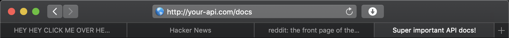

Accelerating API adoption through developer happiness with GraphQL
Quick Graph
Who am I?
- Sean Grove (@sgrove)
- Cofounder of (@OneGraphIO)
- VP Eng @ Payments company
- Background in Clojure(Script)/Reason/Rust, dev-tooling

Accelerating API adoption through developer happiness with GraphQL
Two Points to keep in mind when talking about api adoption:
- Content is king
- Competition is fierce (not always from other APIs)
Content is king
First and foremost, the primary attraction of your API:
- Its data
- Its effects
"How do you help me achieve my business goal?"
Competition is fierce
- Engineering resources are always stretched
At any given time, 20+% of an API-based company's deal-flow is delayed for 6-8 months on engineering resources to get over integration challenges
"The business lead was about to buy, but realized they don't have engineering resources."
- Competition isn't always with other APIs
"Consumer" APIs like Spotify are competing for my attention against other interests I have
Two components
- Engineering resource constraint
Reflects amount of energy required to complete a task
- Developer happiness
Reflects amount of intrinsic energy available to complete a task
APIs are rarely known for sparking joy
- Lack of empathy (broken feedback loop)
- Limited resources for design/documentation/testing/tooling, etc.
Setting the scene…
Perception of our API's adoption

Reality of our API's adoption curve


"Though I walk through the valley of the shadow of auth…"


[Developer PSA]


Three metrics for dev happiness
Evaluate your API with the following criteria:
- Time to initial success (Success ASAP)
- Intensity of success (Biggest "wow" moments possible)
- Interval between subsequent success states (make success frequent)
Criteria => Maxims:
- Deliver quickest initial success
- Maximize "wow" factor
- Make success frequent
How does GraphQL help?
- GraphQL is inherently machine-readable (at multiple levels!)
- The tooling possible is intensely powerful
- A positive feedback loop
GraphQL Help: Demoathon
GraphiQL - Auto-complete APIs!
GraphiQL Explorer
GraphiQL Smart Forms
Next level: Auto-parameterize existing queries


GraphiQL Code Exporter
Compare to existing fragmented experiences:
- Documentation is often "inert"
- Examples aren't generalizable
- Initial experimentation isn't reusable in code
Who can traverse graphs?
- Humans
- Computers
Who's generally better?
Computers.
Multi-APIs
Hasura: Instant Realtime GraphQL on Postgres
Like Firebase++, but:
- On Postgres
- Standard GraphQL
- Open-source
Automatically combining APIs
- Remote schema integration
- "Remote-service joins"
- Compare:
- Stripe-as-a-library
- Stripe-as-an-introspectable-graph
Auto-complete inside IDE
GraphQL goes everywhere
- Sales VP, CFO, etc.
- Managers: "I need a list of new users for the past 30 days"
GraphQL as async server-to-server events: Webhook delivery
GraphQL Cortex
GraphQL Cortex: sean@onegraph.com
Conquering Auth
Auth is difficult, and deeply unpleasant.
Build it into your API.
[Auto "Log in to <X>" example]
Progressive Auth
Progressive auth is the right thing to do.
It's also even more unpleasant!
Build it into your API.
type Company {
id: String!
name: String!
createdAt: DateTime!
accountBalance: Int @permissions(scopes: ["account:read"])
}
{
"errors": [
{
"message": "Missing scope for accountBalance. Please grant additional permissions.",
"path": [
"company"
"accountBalance"
],
"extensions": {
"type": "auth/insufficient-auth",
"requiredScope": "account:read",
}
}
],
"data": {
"company": {
"id": "hZd773dvb"
"name": "Globodex, Inc."
}
}
}
Virtuous-data cycle
Deep Analytics: What can we do?
Iterative API design
Solution to ivory-tower API design problem - inherent loop
Example of breaking schema
- Deprecate old fields
- Identify specific clients who have accessed in the past
- Reach out to work on migration
- Show potential impact for failed migration (you've accessed these fields 10,000 in the past 30 days)
- Write query transformers to update client queries automatically
- Compare to REST: small tweaks indiscriminately affect all clients OR fork the world

Schema changelog automation
Living, responding, accurate API Docs
- "Lies, damn lies, and API documentation"
- Accurate docs and consistent APIs
- "For the new users who signed up two weeks ago, what fields have they been accessing?"
- Humans classify unrecognized new use-cases
- Insert into documentation as annotated example
- Sort ranking based on trends in new users
- Potentially even per client-group via tagging clients
Auto-classify fields for mocking use for mocking to help users without accounts
What's better than auto-auth?
No auth!
- First/Last/Full name
- Language distribution
- Address, Zip Code, Country
- URI
GraphQL Muse: sean@onegraph.com
Deep performance monitoring
- Performance/timing
- Error rates
- Audit-logs
- Total requests, bytes
… per field
GDPR, COPPA, HIPAA, PII
Combine client+field-level access with server-awareness of data sensitivity:
type User @ GDPR {
id: String!
name: String!
birthdate: DateTime! @PII
lastMedicalAppointment: DateTime @HIPAA
socialSecurityNumber: String @PII
}
- Automate permissions + privilege
- Track data exposure
Getting over the hurdle
- Analyze current network traffic
- Track "novelty" over time
- Derive actual API contract
- Authentication
- Pagination
- Relationships
- Types
- Generate GraphQL
…
- Self-contained binary
- Runs next to your webserver
- OSS
- On-premise
Appiderv: sean@onegraph.com
Summary
GraphQL itself offers substantial benefits out of the box.
The tooling today and tomorrow take developer happiness to the next level:
- For API providers
- For data-infrastructure managers
- For client-side developers
- And even for non-traditional devs: CFOs, VP Sales, Managers, Data-scientists, etc.
- Ultimately the data and effects of your API are king - focus on that exclusively.
- But if you want your api to adopted in 2019, it must plug into next-level tooling:
- Familiar
- Exploration
- Documentation
- Code generation
- Client migration
- Analytics-lifecycle
- Pick standards that can give you as much of the above in an evolve-able way out of the box
- Designing apis still involves humans, but checking for consistency can be automated
- Content is king
- Competition is fierce
A word of caution:
- This is a 'wow' moment now.
- ….In a few years, it will simply be table-stakes.
- OneGraph tooling has started to spread and become standard!
- How is your API going to fit into that world?
Adopt GraphQL & focus on #1
My offers
The GraphQL Book
5 copies of the new GraphQL book by our friends @MoonHighway, the premier GraphQL training group:

Tweet your best GraphQL questions (@OneGraphIO)
- GraphQL adoption
- Tooling possibilities
- Etc.
GraphQL, APIs, Dev-Tooling & Coffee
Developer happiness for your company
Want this tooling for your api and for your developers?
We can make it happen for you, public or on-premise.
Thank you!
- Sean Grove (@sgrove)
- Cofounder of (@OneGraphIO)
Misc
Overview
Client-side DX
Meta-API
Maintainers
Demos
- GraphiQL autocomplete
- Explorer
- Smart forms
- Exporter - figure out trello api?
- Excel
- GraphQL goes everywhere - even into Excel!
- Multi-APIs
- Automatic progressive authorization
- Hasura DB-access
- We've seen internal devs who - when they're so frustrated with an inscrutable api - stand up a hasura instance to build and prototype instead
- Hasura remote-joins
- Draftbit
- npm (salesforce) api redesign
- in-editor autocomplete
- Breaking schema changes
- GraphQL Pipelines
- Webhooks
- Generating JWT with GraphQL for authorization and authentication
Ideas
- Inferring API design from traffic
- Generate GraphQL Layer
- API analytics
- "Living API Docs" - can even be generated per client-group ("Fintech devs want to see these cases first", "startups want these cases first") if you tag the clients and see what fields they query in common
- Migrating existing clients (affects api maintainers)
- Auto-classify fields and use for mocking to help users without accounts
CTAs
- Ask me out for coffee
- Best 5 tweets get GraphQL book
- Waitlist for products
- GraphQL Pipelines
- Analytics classifier/mocking
- API inferrer
- Want this tooling for your api, for your developers? We can make it happen for you, public or internal
"This is a 'wow' moment now. It won't be in a few years - it'll be table-stakes. How is your API going to fit into that world?" "The developer has remained in a state of constant success" "If you give your developers super-powers, they'll love you"